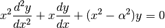

Special functions (scipy.special)¶
The main feature of the scipy.special package is the definition of numerous special functions of mathematical physics. Available functions include airy, elliptic, bessel, gamma, beta, hypergeometric, parabolic cylinder, mathieu, spheroidal wave, struve, and kelvin. There are also some low-level stats functions that are not intended for general use as an easier interface to these functions is provided by the stats module. Most of these functions can take array arguments and return array results following the same broadcasting rules as other math functions in Numerical Python. Many of these functions also accept complex numbers as input. For a complete list of the available functions with a one-line description type >>> help(special). Each function also has its own documentation accessible using help. If you don’t see a function you need, consider writing it and contributing it to the library. You can write the function in either C, Fortran, or Python. Look in the source code of the library for examples of each of these kinds of functions.
Bessel functions of real order(jn, jn_zeros)¶
Bessel functions are a family of solutions to Bessel’s differential equation with real or complex order alpha:

Among other uses, these functions arise in wave propagation problems such as the vibrational modes of a thin drum head. Here is an example of a circular drum head anchored at the edge:
>>> from scipy import *
>>> from scipy.special import jn, jn_zeros
>>> def drumhead_height(n, k, distance, angle, t):
... nth_zero = jn_zeros(n, k)
... return cos(t)*cos(n*angle)*jn(n, distance*nth_zero)
>>> theta = r_[0:2*pi:50j]
>>> radius = r_[0:1:50j]
>>> x = array([r*cos(theta) for r in radius])
>>> y = array([r*sin(theta) for r in radius])
>>> z = array([drumhead_height(1, 1, r, theta, 0.5) for r in radius])
>>> import pylab
>>> from mpl_toolkits.mplot3d import Axes3D
>>> from matplotlib import cm
>>> fig = pylab.figure()
>>> ax = Axes3D(fig)
>>> ax.plot_surface(x, y, z, rstride=1, cstride=1, cmap=cm.jet)
>>> ax.set_xlabel('X')
>>> ax.set_ylabel('Y')
>>> ax.set_zlabel('Z')
>>> pylab.show()